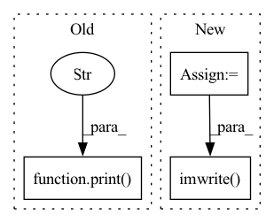

Pattern ID :38557

Before Change
print("Build RRDBNet model successfully.")
// Load the super-resolution model weights
print(f"Load RRDBNet model weights `{os.path.abspath(config.model_path)}`...")
state_dict = torch.load(config.model_path, map_location=config.device)
model.load_state_dict(state_dict)
print(f"Load RRDBNet model weights `{os.path.abspath(config.model_path)}` successfully.")
After Change
// Save image
sr_image = imgproc.tensor2image(sr_tensor, range_norm=False, half=True)
sr_image = cv2.cvtColor(sr_image, cv2.COLOR_RGB2BGR)
cv2.imwrite(sr_image_path, sr_image)
// Cal PSNR
sr_image = sr_image.astype(np.float32) / 255.
sr_y_image = imgproc.bgr2ycbcr(sr_image, use_y_channel=True)
In pattern: SUPERPATTERN
Frequency: 3
Non-data size: 3
Instances
Fragment ID: 110268579
Project Name: lornatang/esrgan-pytorch
Commit Name: 087e0c9bc621989889918b52b7c0dba9485c5fd6
Time: 2022-03-06
Author: liuchangyu1111@gmail.com
File Name: validate.py
M Class Name: AnonimousClass
N Class Name: AnonimousClass
M Method Name: main(0)
N Method Name: main(0)
M Parent Class:
N Parent Class:
M File Name: validate.py
N File Name: validate.py
M Start Line: 28
M End Line: 82
N Start Line: 30
N End Line: 91
'>
Before Change
print("Build SRGAN model successfully.")
// Load the super-resolution model weights
print(f"Load SRGAN model weights `{os.path.abspath(config.model_path)}`...")
state_dict = torch.load(config.model_path, map_location=config.device)
model.load_state_dict(state_dict)
print(f"Load SRGAN model weights `{os.path.abspath(config.model_path)}` successfully.")
After Change
// Save image
sr_image = imgproc.tensor2image(sr_tensor, range_norm=False, half=True)
sr_image = cv2.cvtColor(sr_image, cv2.COLOR_RGB2BGR)
cv2.imwrite(sr_image_path, sr_image)
// Cal PSNR
sr_image = sr_image.astype(np.float32) / 255.
sr_y_image = imgproc.bgr2ycbcr(sr_image, use_y_channel=True)
'>
Fragment ID: 110268581
Project Name: lornatang/srgan-pytorch
Commit Name: 231bd74d21d7f532fd746f4a1cb8fb3bc008c933
Time: 2022-03-03
Author: liuchangyu1111@gmail.com
File Name: validate.py
M Class Name: AnonimousClass
N Class Name: AnonimousClass
M Method Name: main(0)
N Method Name: main(0)
M Parent Class:
N Parent Class:
M File Name: validate.py
N File Name: validate.py
M Start Line: 28
M End Line: 82
N Start Line: 33
N End Line: 91
'>
Before Change
// plt.show()
print("Done making background pics.")
else:
print("Skipping, background pics already combined.")
def create_videos():
pic_path_pattern_bkg = os.path.join(final_dest_bkg, "combined_%04d" + format)
After Change
// prepare canvas imagery
combined_img_background = s_img.copy()
combined_img_person = s_img.copy()
// create masks
background_mask = m_img == 0
person_mask = m_img == 255
// apply masks
combined_img_background[background_mask] = o_img[background_mask]
combined_img_person[person_mask] = o_img[person_mask]
// save combined imagery
combined_img_background_path = os.path.join(dump_path_bkg_masked, str(cnt).zfill(FILE_NAME_NUM_DIGITS) + dump_frame_extension)
combined_img_person_path = os.path.join(dump_path_person_masked, str(cnt).zfill(FILE_NAME_NUM_DIGITS) + dump_frame_extension)
cv.imwrite(combined_img_background_path, combined_img_background)
cv.imwrite(combined_img_person_path, combined_img_person)
else:
print("Skipping combining with masks, already done.")
'>
Fragment ID: 110268586
Project Name: gordicaleksa/pytorch-naive-video-neural-style-transfer
Commit Name: eb258a320653c1198a40fb422c98f1f37212c8cc
Time: 2020-08-03
Author: gordicaleksa@gmail.com
File Name: segmentation.py
M Class Name: AnonimousClass
N Class Name: AnonimousClass
M Method Name: stylized_frames_mask_combiner(3)
N Method Name: stylized_frames_mask_combiner(3)
M Parent Class:
N Parent Class:
M File Name: segmentation.py
N File Name: segmentation.py
M Start Line: 108
M End Line: 150
N Start Line: 109
N End Line: 156